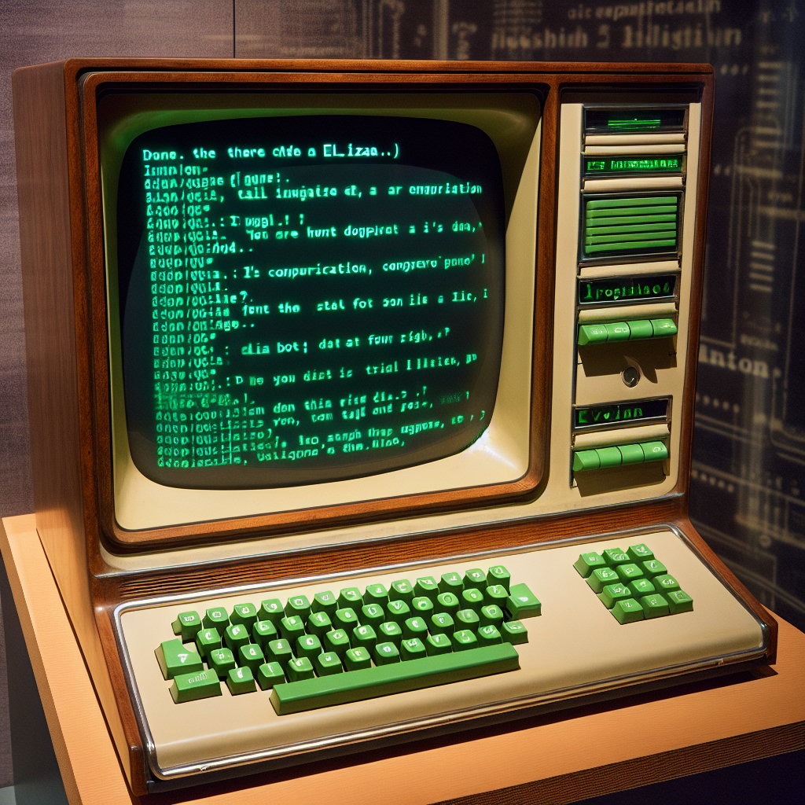
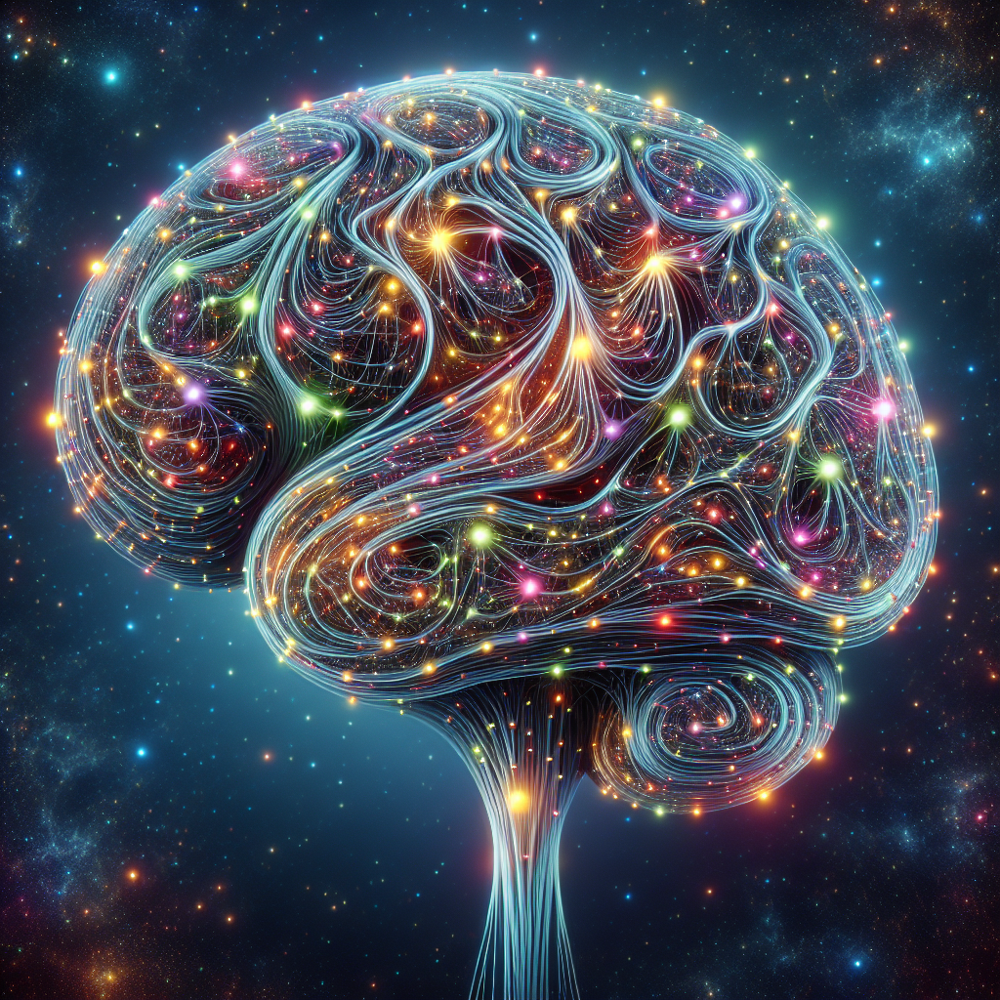
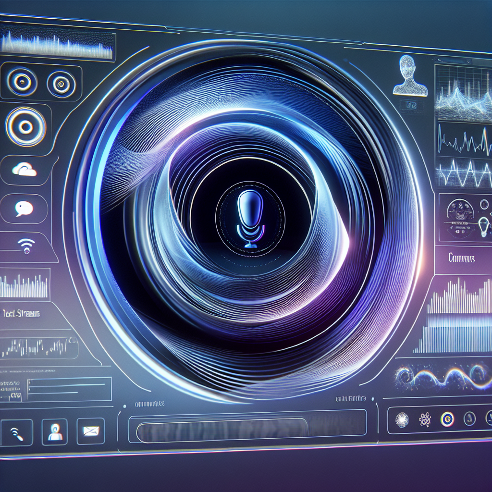
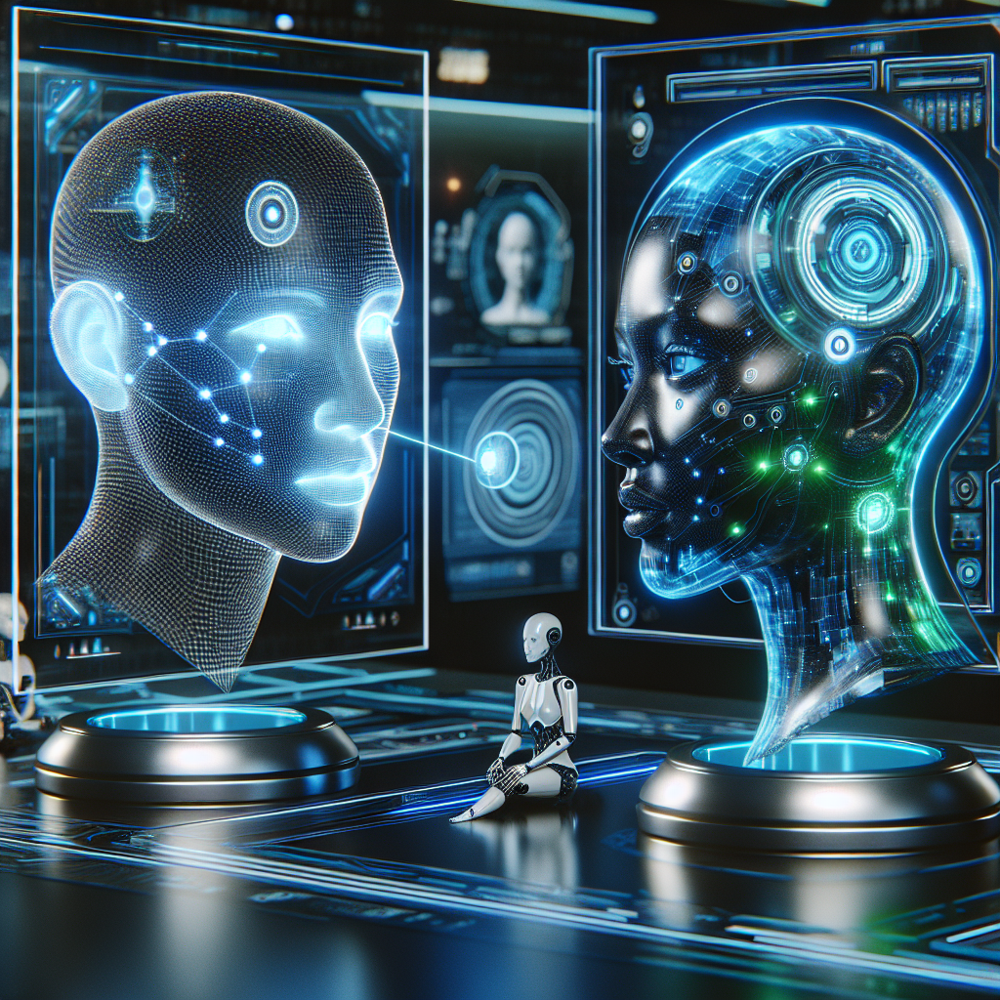
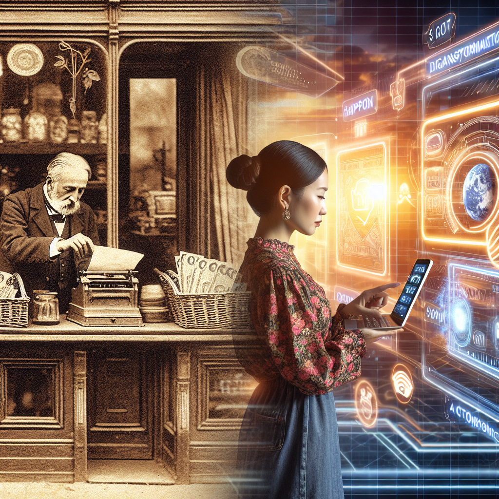

Recent History of Conversational AI
This lecture explores the evolution of conversational AI from its inception to its current state, highlighting key developments, challenges, and the future outlook.
Introduction to Conversational AI
| Definition and scope of conversational AI.The importance of conversational AI in today's digital world.Overview of the lecture. |
Early Days of Conversational AI
|  | ELIZA (1966) - The first chatbot.PARRY (1972) - Advances in simulating paranoid behavior.Limitations of early conversational systems. |
Rise of Machine Learning
| Introduction of machine learning in conversational AI.Significance of data and algorithms for natural language processing (NLP).Early successes and challenges. |
Breakthroughs in Conversational AI
|  | Sequence-to-sequence models and attention mechanisms.Introduction of transformers and BERT.GPT series by OpenAI and its impact. |
Current State of Conversational AI
|  | Capabilities and limitations of current systems.Examples of conversational AI in use today.Ethical considerations and biases in conversational AI. |
The Future of Conversational AI
|  | Predictions for the next decade.Potential advancements in technology and application areas.The role of conversational AI in shaping future human-computer interaction. |
Conclusion
|  | Recap of the key points discussed.The ongoing evolution of conversational AI.Final thoughts on the future challenges and opportunities. |